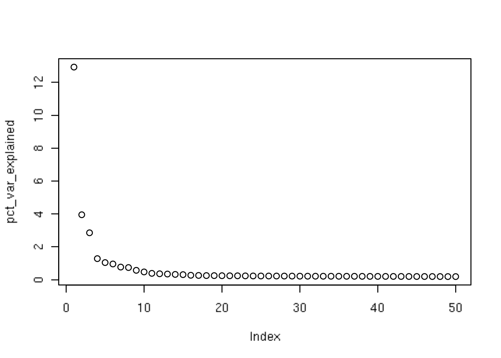

Chapter 7 A Basic Analysis
In this chapter, we will walk through a minimal analysis of a simple scRNA-seq dataset in order to acquaint you with the overall framework of scRNA-seq in code terms.
Where relevant within each part of this basic workflow, we will refer the interested reader to the associated chapter to learn advanced or alternate ways of performing a given task.
Put another way, the workflow demonstrated in this chapter is written with the aim of simplicity, and thus will likely require nontrivial tweaking of parameters or alternate methods in real-world analyses.
One note: in this workflow, we will be loading libraries as they become necessary to clearly link libraries to their respective functions, which usually runs counter to the norm of loading libraries first, at the top of the analysis script.
7.1 Preprocessing & Import to R
We will assume here that sequencing alignment and quantification of the data into a counts matrix, as well as the subsequent import to R has already been performed since this is highly platform- or technology-dependent.
Note that for 10X Genomics data (which is used in this example workflow), the counts matrix and associated metadata (cell barcodes, data path, etc.) can be imported via the DropletUtils package’s read10xCounts() function. For data processed through Salmon/Alevin/Kallisto, we recommend checking out the tximport/tximeta Bioconductor packages. These are either imported as SingleCellExperiment or as a counts matrix which can be then coerced into a SingleCellExperiment object as demonstrated below.
7.2 Constructing the SingleCellExperiment
7.2.1 From Scratch
Below we show an example of creating a SingleCellExperiment class object from a counts matrix and associated experimental metadata.
library(SingleCellExperiment)
## More realistic: read in your experimental design metadata
## If its per cell metadata, make sure it lines up with your
## counts matrix row IDs correctly
## my_metadata <- read.csv("my_metadata.csv")
## Example data
ncells <- 100
my_counts_matrix <- matrix(rpois(20000, 5), ncol = ncells)
my_metadata <- data.frame(genotype = rep(c('A', 'B'), each = 50),
experiment_id = 'Experiment1')
## Construct the sce object manually
sce <- SingleCellExperiment(assays = list(counts = my_counts_matrix),
colData = my_metadata)
## Manually adding a variable that is the same across all cells
colData(sce) <- cbind(colData(sce), date = '2020-01-01')
sce## class: SingleCellExperiment
## dim: 200 100
## metadata(0):
## assays(1): counts
## rownames: NULL
## rowData names(0):
## colnames: NULL
## colData names(3): genotype experiment_id date
## reducedDimNames(0):
## spikeNames(0):7.2.2 From Publicly Available Data
From here on out, we will be working with a small example dataset from the TENxPBMCData Bioconductor package which has already been packaged into a SingleCellExperiment class object:
## class: SingleCellExperiment
## dim: 32738 2700
## metadata(0):
## assays(1): counts
## rownames(32738): ENSG00000243485 ENSG00000237613 ...
## ENSG00000215616 ENSG00000215611
## rowData names(3): ENSEMBL_ID Symbol_TENx Symbol
## colnames: NULL
## colData names(11): Sample Barcode ... Individual Date_published
## reducedDimNames(0):
## spikeNames(0):One decision that should be made early on in the analysis is what row identifier to identify genes. Depending on how the data is imported, the rowData component may already have additional annotation information, such as multiple row mappings. For our new sce object from the pbmc3k dataset, we can take a look at rowData to see our options:
## DataFrame with 32738 rows and 3 columns
## ENSEMBL_ID Symbol_TENx Symbol
## <character> <character> <character>
## ENSG00000243485 ENSG00000243485 MIR1302-10 NA
## ENSG00000237613 ENSG00000237613 FAM138A FAM138A
## ENSG00000186092 ENSG00000186092 OR4F5 OR4F5
## ENSG00000238009 ENSG00000238009 RP11-34P13.7 LOC100996442
## ENSG00000239945 ENSG00000239945 RP11-34P13.8 NA
## ... ... ... ...
## ENSG00000215635 ENSG00000215635 AC145205.1 NA
## ENSG00000268590 ENSG00000268590 BAGE5 NA
## ENSG00000251180 ENSG00000251180 CU459201.1 NA
## ENSG00000215616 ENSG00000215616 AC002321.2 NA
## ENSG00000215611 ENSG00000215611 AC002321.1 NAWe see that we could choose between ENSEMBL_ID (the default), Symbol_TENx, and Symbol. For ease of readability and subsetting, we will utilize the Symbol_TENx identifier as our object’s rownames, making it possible to subset the sce with gene symbols as in sce["CD8A", ].
Now, while this seems to work just fine, eventually we may run into an issue because we actually have duplicated row names here. Depending on how a downstream function is coded, this may cause an esoteric error to pop-up. In fact, here we have about 100 duplicates.
We can avoid future errors (and many headaches) by removing duplicates before any analysis:
## counts dupes from top to bottom to make a logical vector
dupes <- duplicated(rownames(sce))
sce <- sce[!dupes, ]Keep in mind, the above is likely the most inelegant solution to the problem. Other methods could include, from the duplicated set of genes, choosing the one with the highest expression, aggregating the counts per cell, or keeping them all by adding an additional suffix to make the row names unique. Each has its own tradeoffs, so we leave this choice up to the diligent reader.
And one more bit of preprocessing to prevent a potential downstream error is to assign our columns proper names. We can grab the barcodes of each cell from colData and assign them as column names as follows:
7.3 Data Processing
The aim of this section is to form the basis for more interesting downstream analyses. Thus, the objective here is to transform the data into a “clean” expression matrix that has been normalized and freed of technical artifacts, as well as a dimensionality reduction representation that can be used in subsequent analyses and visualization.
7.3.1 Quality Control Metrics
The first step is to ensure that our dataset only contains viable cells, e.g. droplets that contain proper mRNA libraries.
One way to do that is to use the popular “knee plot”, which shows the relationship between the log rank vs the log total counts, and then calculate where the “knee” of the plot is. We use the DropletUtils package to demonstrate this in our example PBMC dataset.
library(DropletUtils)
## Calculate the rank vs total counts per cell
br <- barcodeRanks(counts(sce))
## Create the knee plot
plot(log10(br$rank), log10(br$total))
abline(h = log10(metadata(br)$knee))Figure 7.1: Barcode rank (aka knee) plot showing log10-rank by log10-total counts relationship and calculated knee (horizontal line).
We see that the knee calculated via this method (horizontal line) is at 1740, or on the log scale, 3.2405.
This can be used as a filter to remove cells that are likely to be empty droplets. Before we do that, we will finish calculating other quality control (QC) metrics via the scater package and show the results from the first three cells.
We can display some of the calculated QC metrics appended to the colData component - there are a number of other columns present, but for brevity will only show two pertinent ones.
## DataFrame with 3 rows and 2 columns
## log10_total_features_by_counts log10_total_counts
## <numeric> <numeric>
## AAACATACAACCAC-1 2.89 3.38
## AAACATTGAGCTAC-1 3.13 3.69
## AAACATTGATCAGC-1 3.05 3.5We can further inspect these cells based on their total counts as well as vs the total features detected by counts (e.g. the number of genes that have nonzero counts).
Figure 7.2: Histogram of the log10 total counts with the calculated knee from above (vertical line).
smoothScatter(sce$log10_total_counts, sce$log10_total_features_by_counts, nbin = 250)
abline(v = knee)Figure 7.3: Smoothed scatter plot of the log10-total counts vs the log10-total features detected by counts with the calculated knee from above (vertical line).
While there are various ways to filter cells, here we actually will not need to perform any filtering, as the data has already undergone a stringent quality control, and thus all the cells can be considered high quality.
For the sake of completeness, we will demonstrate here - without evaluating - how to subset based on the previously calculated barcode ranks knee:
7.3.2 Normalizing Data
Next up we will transform the primary data, the counts, into a (log) normalized version. In this section, we will use the scran package throughout.
First however, we will need to calculate scaling factors per cell. This function relies on an initial “quick and dirty” clustering to get roughly similar pools of cells. These are used to generate pool-based estimates, from which the subsequent cell-based size factors are generated. To learn more about the method, see the ?computeSumFactors documentation.
For now, we will perform a simpler normalization, using the library sizes per cell to create a log-normalized expression matrix:
We can see below that we now have two assays, counts and logcounts.
## List of length 2
## names(2): counts logcounts7.3.3 Feature Selection
This section will use the scran package, as we select for informative genes by selecting for those with high coefficients of biological variation.
Since this experiment does not have spike-ins, we will fit the mean-variance trend across the endogenous genes.
library(scran)
fit <- trendVar(sce, use.spikes = FALSE)
plot(fit$mean, fit$var)
curve(fit$trend(x), col = 'red', lwd = 2, add = TRUE)Figure 7.4: Mean-variance trend line fit by scran package trendVar() function.
We can see that the trend line goes through the central mass of genes, and thus continue on with looking at the decomposed variance. In this method, it is assumed that the total variance is the sum of the technical and biological variance, where the technical variance can be determined by interpolating the fitted trend at the mean log-count for that gene. Thus the biological variance is the total variance minus this interpolated (technical) variance.
We can then rank and choose genes which have a biological coefficient of variance greater than zero.
## mean total bio tech p.value FDR
## LYZ 1.629 3.925 3.116 0.809 0 0
## S100A9 1.068 3.352 2.628 0.725 0 0
## HLA-DRA 1.543 3.071 2.278 0.793 0 0
## FTL 3.637 2.941 2.203 0.738 0 0
## CD74 2.209 2.696 1.900 0.796 0 0The total number of genes with biological variance greater than zero as 3770.
Alternatively, we could use the p-value/FDR as a way to rank our genes, but do note the following (from the simpleSingleCell vignette:
“Ranking based on p-value tends to prioritize HVGs that are more likely to be true positives but, at the same time, less likely to be interesting. This is because the ratio can be very large for HVGs that have very low total variance and do not contribute much to the cell-cell heterogeneity.”
However we choose, we can save these highly variable genes and use them for subsequent analyses:
For the purpose of sharing and saving this list of genes, we can stash the result into the metadata component of our sce object as follows:
## [1] "LYZ" "S100A9" "HLA-DRA" "FTL" "CD74" "CST3" "S100A8"
## [8] "TYROBP" "NKG7" "FTH1"The metadata component can hold any object, as it is a list container. Any results that you’d like to keep are safe to store here, and a great way to save or share intermediate results that would otherwise be kept in separate objects.
7.3.4 Dimensionality Reduction
We now can perform dimensionality reduction using our highly variable genes (hvg_genes) subset. To do this, we will first calculate the PCA representation via the runPCA() function from the scater package. We will calculate 50 components on our highly variable genes:
The results of these calculations will be stored in the reducedDims component. This method saves the percent variance explained per component as an attribute, which can be accessed as follows, and subsequently plot the “elbow plot”:
## access the attribute where percentVar is saved in reducedDim
pct_var_explained <- attr(reducedDim(sce, 'PCA'), 'percentVar')
plot(pct_var_explained) # elbow plot
To calculate a 2-dimensional representation of the data, we will use the top 20 components of our PCA result to compute the UMAP representation.
Figure 7.5: UMAP plot.
With that, we have a canvas on which to paint our downstream analyses.
7.4 Downstream Statistical Analyses
There are a plethora of potential downstream analyses to run, the choice of which is highly dependent on the biological objective. For this example dataset, our aim will be to identify the key cell types via a combination of clustering and differential expression.
7.4.1 Clustering
Based on our earlier UMAP plot, it appears that we have a few distinct clusters. To do this computationally, we can utilize the scran package to:
- build a shared nearest neighbor (SNN) graph
- calculate based on the SNN graph the most representative clusters
In this first step, we will specify that we will consider k nearest neighbors, and d dimensions from the PCA calculation as follows:
Following the graph construction, we can calculate the clusters using a variety of different graph-based methods from the igraph package. Here, we use the louvain method to determine our cell’s cluster memberships.
We see that we have the following numbers of cells per cluster:
##
## 1 2 3 4 5
## 687 350 556 528 579To view this result graphically on the UMAP plot, we first assign the result to the colData component as a new column, and specify this as our color variable in the plotUMAP() function:
Figure 7.6: UMAP plot showing calculated clusters.
Naturally, this result will change as we tweak the number of k neighbors to consider and with the specific clustering algorithm, but for now we will go onwards to find markers of each of our clusters.
7.4.2 Differential Expression
In this section, we will look to identify genes that are unique to each of our clusters. To accomplish this, we will lean on the scran package to perform the analysis, and then the scater package to visualize the results.
For this analysis, we will limit ourselves to a top subset of highly variable genes in our hvg_genes set, purely for the sake of computation time. Furthermore, we will limit our consideration to genes with an increased log fold-change of at least 1.5 versus other clusters. We will also use the BiocParallel package to parallelize the computation and speed up our processing via the BPPARAM argument.
markers <- findMarkers(sce, clusters = colData(sce)$clusters,
subset.row = hvg_genes[1:250],
lfc = 1.5, direction = 'up', log.p = TRUE,
BPPARAM = BiocParallel::MulticoreParam())We can view the top 5 markers that are differentially expressed (by our specified metrics):
## Top log.p.value log.FDR logFC.2 logFC.3 logFC.4 logFC.5
## CST3 1 -831.4 -825.9 3.446 3.470 3.413 3.480
## TYROBP 1 -778.7 -773.8 3.325 3.324 2.691 3.301
## LYZ 2 -526.9 -522.8 4.028 4.011 4.072 4.000
## FTL 3 -667.3 -662.9 3.110 3.634 3.463 3.534
## FTH1 4 -474.3 -470.6 2.771 3.118 3.100 2.755We can see that CD3D, a marker of T cells, is one of our top differentially expressed genes in cluster 1. We can plot the expression of this gene across all our clusters as follows:

Figure 7.7: Violin plots of CD3D expression across clusters.
This plot highlights that CD3D is more highly expressed in cluster 1 relative to some of the other clusters, but not all. This can also be seen from our raw output above, where the log fold-change is calculated with respect to each cluster. There, we see that the log fold-change for CD3D is very high only relative to clusters 2 and 3 (meeting our cutoff of 1.5).
7.4.3 Annotation
7.4.3.1 A Manual Approach
To finish off our the downstream analysis section here, we will look to annotate our clusters with a cell type designation, based on publicly available knowledge.
Before we do that, let’s get a broader view of our top differentially expressed genes. To do this, we can iterate over the list-object returned by findMarkers to get the top 10 genes per cluster, and then plot these genes in a heatmap.
## grab the top 10 genes per cluster (e.g. within each list component)
genes <- lapply(markers, function(x) {
rownames(x)[x$Top <= 10]
})
## uniqify the set of genes returned, after coercing to a vector
genes <- unique(unlist(genes))
plotHeatmap(sce, genes,
colour_columns_by = "clusters",
show_colnames = FALSE,
clustering_method = 'ward.D2',
fontsize_row = 6)Figure 7.8: Heatmap showing top differentially expressed genes across the clusters.
Based on the heatmap output (and a priori knowledge), we can make some observations:
- CD79A/CD79B, markers of B cells, are uniquely and highly expressed in cluster 2
- HLA genes, present on antigen presenting cells (APCs), are highly expressed across clusters 2 and 3
- LYZ, a marker of dendritic cells (an APC), is highly expressed in cluster 3
- Granzymes A and B (GZMA/GZMB), and NKG7, markers of cytotoxic cells such as CD8s and NK cells, are highly expressed within (a subset of cluster 4)
- CD3D/CD3E, markers of T cells, are expressed across clusters 5, 1, and 4
Finally, we can view a selection of the genes mentioned above on our previous UMAP plot:
Figure 7.9: Various UMAP plots showing the expression of select cell-type specific genes.
Figure 7.10: Various UMAP plots showing the expression of select cell-type specific genes.

Figure 7.11: Various UMAP plots showing the expression of select cell-type specific genes.
Figure 7.12: Various UMAP plots showing the expression of select cell-type specific genes.
Combining the information derived from our heatmap and viewing these genes on our UMAP, we can come to the following conclusion:
- Cluster 2 is likely to be B cells
- Cluster 3 is likely to be dendritic cells
- Clusters 1, 5, 4 appear to represent a spectrum of cells with cytotoxic capabilities, likely composed of a combination of T cells and NK cells,
- Cluster 4 exhibits an strong NK cell signature on the basis of NKG7
Now that we’ve manually sorted our dataset on the basis of prior knowledge, let’s try a more automated approach using publicly available markers.
7.4.3.2 An Automated Approach
Manually classifying cell types present in an scRNA-seq experiment can be prone to bias in terms of how a label is selected. Thus have emerged automated classification approaches which take a measured approach to the labeling of cell types.
One such approach - cellassign - applies labels in a single-cell manner based on a gene by cell type “marker matrix”. Here, we utilize an existing gene by cell type annotation from a publication by Becht et al. (2016) which categorizes genes into cell types based on the specificity of their expression.
Let’s first construct a marker matrix loosely inspired by the Seurat PBMC 3k tutorial:
anno <- data.frame(
SYMBOL = c(
'IL7R', 'CCR7', 'CD4', 'CD3D', 'CD3E',
'CD14', 'LYZ',
'MS4A1', 'CD79A', 'CD79B',
'CD8A', 'CD8B', 'CD3D', 'CD3E',
'GNLY', 'NKG7',
'FCER1A', 'CST3', 'ITGAX'
),
cell_type = c(
rep('CD4 T cell', 5),
rep('Monocyte', 2),
rep('B cell', 3),
rep('CD8 T cell', 4),
rep('NK cell', 2),
rep('Dendritic cell', 3)
)
)Lastly, we’ll need to reformat this matrix to fit the expectations of cellassign, chiefly to convert the annotation into a binary matrix of genes (rows) by cell types (columns):
## construct rho (binary marker matrix)
tmp <- tidyr::spread(anno, cell_type, cell_type)
rho <- ifelse(is.na(tmp[, -1]), 0, 1)
rownames(rho) <- tmp$SYMBOL
## remove entries that are not present in our dataset
rho <- rho[rownames(rho) %in% rownames(sce), ]
rho[1:3, ]## B cell CD4 T cell CD8 T cell Dendritic cell Monocyte NK cell
## CCR7 0 1 0 0 0 0
## CD14 0 0 0 0 1 0
## CD3D 0 1 1 0 0 0We can then run the cellassign method to produce cell type labels on a per cell basis:
## devtools::install_github('Irrationone/cellassign')
library(cellassign)
library(tensorflow)
set.seed(1234)
reticulate::py_set_seed(1234)
fit <- cellassign(sce[rownames(rho), ],
marker_gene_info = rho,
s = sizeFactors(sce))## 160 L old: -97042.4116434613; L new: -46422.4311352146; Difference (%): 0.521627396217512
## 80 L old: -46422.4311352146; L new: -46072.5841608096; Difference (%): 0.00753616227866197
## 60 L old: -46072.5841608096; L new: -45509.3585831869; Difference (%): 0.0122247446693432
## 60 L old: -45509.3585831869; L new: -44726.5864190189; Difference (%): 0.0172002460271371
## 60 L old: -44726.5864190189; L new: -44358.1679824796; Difference (%): 0.00823712395772292
## 40 L old: -44358.1679824796; L new: -44281.9051353908; Difference (%): 0.00171925150558442
## 40 L old: -44281.9051353908; L new: -44230.4961636357; Difference (%): 0.00116094760597745
## 40 L old: -44230.4961636357; L new: -44181.1130183581; Difference (%): 0.00111649539482703
## 40 L old: -44181.1130183581; L new: -44135.5164487203; Difference (%): 0.00103203759531462
## 40 L old: -44135.5164487203; L new: -44101.5814927208; Difference (%): 0.000768880908845695
## 40 L old: -44101.5814927208; L new: -44080.7744168154; Difference (%): 0.000471798860747732
## 40 L old: -44080.7744168154; L new: -44067.3190301326; Difference (%): 0.00030524388150761
## 40 L old: -44067.3190301326; L new: -44056.8289956957; Difference (%): 0.000238045668939741
## 40 L old: -44056.8289956957; L new: -44047.3356402519; Difference (%): 0.000215479771470688
## 20 L old: -44047.3356402519; L new: -44040.3851785381; Difference (%): 0.000157795281207311
## 20 L old: -44040.3851785381; L new: -44032.980873052; Difference (%): 0.000168125357126047
## 40 L old: -44032.980873052; L new: -44022.7713210755; Difference (%): 0.00023186147687762
## 40 L old: -44022.7713210755; L new: -44011.9926758065; Difference (%): 0.000244842497314432
## 40 L old: -44011.9926758065; L new: -43999.8964578935; Difference (%): 0.000274839133099664
## 40 L old: -43999.8964578935; L new: -43986.1070954304; Difference (%): 0.000313395338926541Figure 7.13: UMAP showing the results of automated label assignment as performed by cellassign.
In practice, some combination of the above manual and automated classification schema will likely be necessary to properly annotate an scRNA-seq dataset.
7.5 Accessible & Reproducible Analysis
In collaborative settings, it is essential to share data and analyses. Thanks to the SingleCellExperiment class, most of if not all analysis steps performed can be recorded. These outputs are accessible through not only R, but also via graphical user interfaces as well that broaden the potential viewing audience.
7.5.1 Interactive Data Visualization
Interactive exploration and visualization is a great way for collaborators to learn more about scRNA-seq data and analyses. In particular the iSEE package has been especially designed for viewing and sharing scRNA-seq.
Based on the example analyses, we task the interested reader to assess the previous section’s automatic annotation relative to the clustering results using iSEE.
7.6 Session Info
## <button class="aaron-collapse">View session info</button>
## <div class="aaron-content">
## R version 3.6.0 (2019-04-26)
## Platform: x86_64-pc-linux-gnu (64-bit)
## Running under: Ubuntu 14.04.6 LTS
##
## Matrix products: default
## BLAS/LAPACK: /app/easybuild/software/OpenBLAS/0.2.18-GCC-5.4.0-2.26-LAPACK-3.6.1/lib/libopenblas_prescottp-r0.2.18.so
##
## locale:
## [1] LC_CTYPE=en_US.UTF-8 LC_NUMERIC=C
## [3] LC_TIME=en_US.UTF-8 LC_COLLATE=en_US.UTF-8
## [5] LC_MONETARY=en_US.UTF-8 LC_MESSAGES=en_US.UTF-8
## [7] LC_PAPER=en_US.UTF-8 LC_NAME=C
## [9] LC_ADDRESS=C LC_TELEPHONE=C
## [11] LC_MEASUREMENT=en_US.UTF-8 LC_IDENTIFICATION=C
##
## attached base packages:
## [1] stats4 parallel stats graphics grDevices utils datasets
## [8] methods base
##
## other attached packages:
## [1] tensorflow_1.13.1 cellassign_0.99.2
## [3] scran_1.13.9 scater_1.13.9
## [5] ggplot2_3.2.0 DropletUtils_1.5.4
## [7] TENxPBMCData_1.3.0 HDF5Array_1.13.4
## [9] rhdf5_2.29.0 SingleCellExperiment_1.5.3
## [11] SummarizedExperiment_1.15.5 DelayedArray_0.11.4
## [13] BiocParallel_1.19.0 matrixStats_0.54.0
## [15] Biobase_2.45.0 GenomicRanges_1.37.14
## [17] GenomeInfoDb_1.21.1 IRanges_2.19.10
## [19] S4Vectors_0.23.17 BiocGenerics_0.31.5
## [21] BiocStyle_2.13.2 Cairo_1.5-10
##
## loaded via a namespace (and not attached):
## [1] bitops_1.0-6 bit64_0.9-7
## [3] httr_1.4.0 dynamicTreeCut_1.63-1
## [5] tools_3.6.0 backports_1.1.4
## [7] R6_2.4.0 irlba_2.3.3
## [9] vipor_0.4.5 DBI_1.0.0
## [11] lazyeval_0.2.2 colorspace_1.4-1
## [13] withr_2.1.2 gridExtra_2.3
## [15] tidyselect_0.2.5 bit_1.1-14
## [17] curl_4.0 compiler_3.6.0
## [19] BiocNeighbors_1.3.2 bookdown_0.12
## [21] scales_1.0.0 tfruns_1.4
## [23] rappdirs_0.3.1 stringr_1.4.0
## [25] digest_0.6.20 rmarkdown_1.14
## [27] R.utils_2.9.0 XVector_0.25.0
## [29] base64enc_0.1-3 pkgconfig_2.0.2
## [31] htmltools_0.3.6 dbplyr_1.4.2
## [33] limma_3.41.6 rlang_0.4.0
## [35] RSQLite_2.1.1 DelayedMatrixStats_1.7.1
## [37] shiny_1.3.2 jsonlite_1.6
## [39] dplyr_0.8.3 R.oo_1.22.0
## [41] RCurl_1.95-4.12 magrittr_1.5
## [43] BiocSingular_1.1.5 GenomeInfoDbData_1.2.1
## [45] Matrix_1.2-17 ggbeeswarm_0.6.0
## [47] Rcpp_1.0.1 munsell_0.5.0
## [49] Rhdf5lib_1.7.2 reticulate_1.12
## [51] viridis_0.5.1 R.methodsS3_1.7.1
## [53] whisker_0.3-2 stringi_1.4.3
## [55] yaml_2.2.0 edgeR_3.27.6
## [57] zlibbioc_1.31.0 BiocFileCache_1.9.1
## [59] AnnotationHub_2.17.3 grid_3.6.0
## [61] blob_1.2.0 promises_1.0.1
## [63] dqrng_0.2.1 ExperimentHub_1.11.1
## [65] crayon_1.3.4 lattice_0.20-38
## [67] locfit_1.5-9.1 zeallot_0.1.0
## [69] knitr_1.23 pillar_1.4.2
## [71] igraph_1.2.4.1 glue_1.3.1
## [73] evaluate_0.14 BiocManager_1.30.4
## [75] vctrs_0.2.0 httpuv_1.5.1
## [77] gtable_0.3.0 purrr_0.3.2
## [79] assertthat_0.2.1 xfun_0.8
## [81] rsvd_1.0.1 mime_0.7
## [83] xtable_1.8-4 later_0.8.0
## [85] viridisLite_0.3.0 tibble_2.1.3
## [87] beeswarm_0.2.3 AnnotationDbi_1.47.0
## [89] memoise_1.1.0 statmod_1.4.32
## [91] interactiveDisplayBase_1.23.0
## </div>